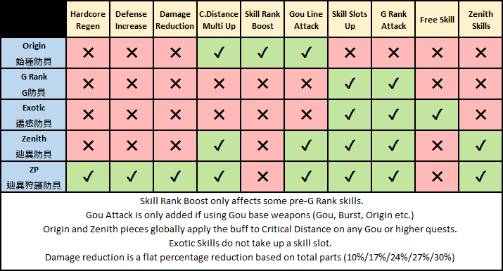
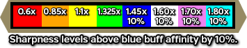
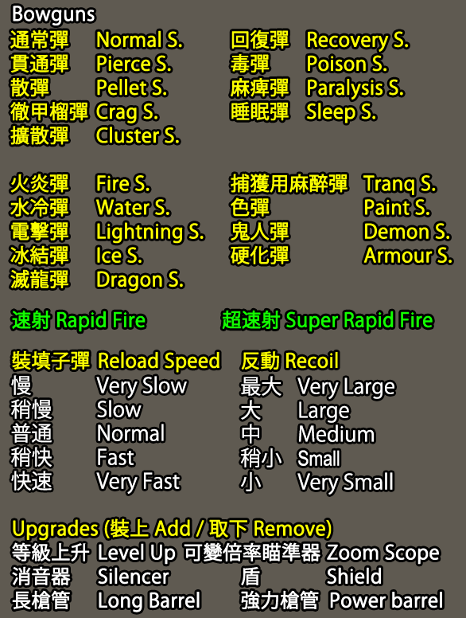
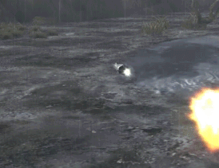
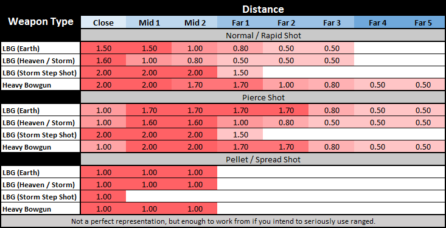
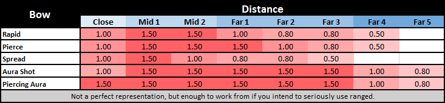
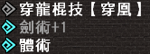
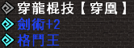

Quick References Sheet
Hover menus to show original Chinese text.
A bunch of quick references for Armour Progress, Weapon Progress, etc.

Most standard armour does not go beyond HS. HC and HS are sometimes skipped and HS can also be simply listed as 狩護防具 without the HS branding. Some armours can also start at FX level or may never get any lettered levels at all.
Most armour does not go beyond R. These armours have no actual long term use.
Most armour does not go beyond L. These armours have no actual long term use.
Single step with 7 levels, mostly only useful for Gathering Sets with SP decorations.
Premium armour may skip certain steps such as HC. GP requires GR1 materials and ZP GR200 materials.
Steps are GR200, GR400, GR600 and GR800.
| Weapon Names (EN/CN/JP) | Multi | ||
| Sword and Shield | 單手劍 | 片手剣 | 1.4 |
| Dual Swords | 雙劍 | 双剣 | 1.4 |
| Great Sword | 大劍 | 大剣 | 4.8 |
| Long Sword | 太刀 | 太刀 | 4.8 |
| Hammer | 大錘 | ハンマー | 5.2 |
| Hunting Horn | 狩獵笛 | 狩猟笛 | 5.2 |
| Lance | 長槍 | ランス | 2.3 |
| Gunlance | 銃槍 | ガンランス | 2.3 |
| Tonfa | 穿龍棍 | 穿龍棍 | 1.8 |
| Switch Axe F | 斬擊斧Ｆ | スラッシュアックスF | 5.4 |
| Weapon Raw Multipliers | |
| Sword and Shield | 1.4 |
| Dual Swords | 1.4 |
| Great Sword | 4.8 |
| Long sword | 4.8 |
| Hammer | 5.2 |
| Hunting Horn | 5.2 |
| Lance | 2.3 |
| Gunlance | 2.3 |
| Tonfa | 1.8 |
| Switch Axe | 5.4 |
| Magnet Spike | 5.4 |
Sharpness in MHF has 8 levels currently, ranging from red to cyan. The image below shows each level of sharpness with its Raw Multiplier on the top and the Elemental Multiplier on the bottom. Blue Sharpness or higher also adds an additional 10% Affinity.

| Elements, Status and Properties | |
| 火屬性 | Fire |
| 雷屬性 | Thunder |
| 龍屬性 | Dragon |
| 水屬性 | Water |
| 冰屬性 | Ice |
| 催眠屬性(累積值) | Sleep |
| 毒屬性(累積值） | Poison |
| 麻痺屬性(累積值) | Paralysis |
| 防禦力+ | Defense + |
| Combo Elements | |
| 光屬性 | Light (70% Fire, 70% Thunder) |
| 炎屬性 | Blaze (70% Fire, 70% Dragon) |
| 天翔屬性 | Tenshou (30% Fire, 100% Water, 70% Thunder) |
| 雷棰屬性 | Lightning Rod (70% Thunder, 70% Dragon) |
| 熾凍屬性 | Okiko (80% Fire, 80% Ice, 40% Dragon) |
| 黑焰屬性 | Black Flame (50% Fire, 150% Dragon) |
| 紅魔屬性 | Crimson Demon (50% Dragon, 150% Fire) |
| 闇屬性 | Dark (80% Ice, 80% Dragon) |
| 奏屬性 | Music (100% Water, 100% Ice) |
| 響屬性 | Sound (100% Water, 100% Dragon) |
| 風屬性 | Wind (80% Thunder, 80% Ice) |
| 灼零 | Burning Zero (125% Ice, 125% Fire) |
| 皇鳴 | Emperor's Roar (150% Thunder, 50% Dragon) |
Combination elements always deal the damage of both elements, the visible element upon hitting a monster will be whatever that hitzone is weak to. So for example if you had a weapon with 100 Light and hit a hitbox that was weak to fire, you would deal 80 Thunder and 80 Fire but you would only see the fire damage visuals.
| Weapon Length (長度) | |
| 極短 | Very Short |
| 短 | Short |
| 中 | Normal |
| 長 | Long |
| 極長 | Very Long |
| Gunlance Shots | |
| 【通常型】 | Normal Shot |
| 【擴散型】 | Spread Shot |
| 【放射型】 | Long Shot |
| 砲擊LV | Shelling Level |
| Sword Crystals | |
| 爆擊劍晶 | Explosive Sword Crystal |
| 強擊劍晶 | Power Sword Crystal |
| 猛毒劍晶 | Poison Sword Crystal |
| 麻痺劍晶 | Paralysis Sword Crystal |
| 睡眠劍晶 | Sleep Sword Crystal |
| 火焰劍晶 | Fire Sword Crystal |
| 水激劍晶 | Ice Sword Crystal |
| 雷神劍晶 | Thunder Sword Crystal |
| 冰結劍晶 | Ice Sword Crystal |
| 龍王劍晶 | Dragon Sword Crystal |
| GR200 Sword Crystals | |
| 業炎劍晶 | Inferno Sword Crystal |
| 水獄劍晶 | Tsunami Sword Crystal |
| 雷霆劍晶 | Storm Sword Crystal |
| 冰刃劍晶 | Glacial Sword Crystal |
| 龍帝劍晶 | Elder Dragon Sword Crystal |
Weapon length is a mechanic unique to Frontier, the length adjusts the total reach of the weapon and the 'sweet spot' accordingly. For example, on a very short GS the entire hitbox of the weapon practically becomes the sweet spot at the cost of losing a lot of range with the opposite being true on very long ones.
Sword Crystals require you to have their individual skills to be used, there are three tiers of each with +3 giving the maximum damage or status infliction per crystal used. You can apply the crystals by either holding R2 and pressing the Right Analog in (R3) or by pressing Shift plus the Minus key (not on numpad) or by using the Touchpad on the Vita.
GR200 Sword Crystals are purely elemental and do around the same amount of elemental damage as three hits from normal ones. These crystals can only be purchased for GCP from the Pink store after hitting GR 200 at G rank.
| Weapon Names (EN/CN/JP) | Multi | ||
| Light Bowgun | 輕弩 | ライトボウガン | 1.2 |
| Heavy Bowgun | 重銃 | ヘビィボウガン | 1.2 |
| Bowgun Reload Speed (裝填子彈) | |
| 稍慢 | Very Slow |
| 慢 | Slow |
| 普通 | Normal |
| 稍快 | Fast |
| 快速 | Very Fast |
| Bowgun Recoil (反動) | |
| 中 | Medium |
| 小 | Small |
| 稍小 | Smaller |
| Bowgun Ammo | |
| 通常彈 | Normal Shot |
| 貫通彈 | Pierce Shot |
| 散彈 | Pellet Shot |
| 徹甲榴彈 | Crag Shot |
| 擴散彈 | Cluster Shot |
| 回復彈 | Recovery Shot |
| 毒彈 | Poison Shot |
| 麻痺彈 | Paralysis Shot |
| 睡眠彈 | Sleep Shot |
| 火炎彈 | Fire Shot |
| 水冷彈 | Water Shot |
| 電擊彈 | Thunder Shot |
| 冰結彈 | Ice Shot |
| 滅龍彈 | Dragon Shot |
| 捕獲用麻醉彈 | Tranq Shot |
| 色彈 | Paint Shot |
| 鬼人彈 | Demon Shot |
| 硬化彈 | Armour Shot |
| 速射 | Rapid Fire |
| 超速射 | Ultra Rapid Fire |
Check Equipment, Decorations & Skills > Weapons > Detailed Weapon Information section for this.

Critical Distance is indicated by the shot expanding fully and creating a circle indicator.

Heavy Bowgun has a much larger impact animation while in the first half of critical distance on standard shots making it incredibly obvious when you are properly spaced. This adds an extra 0.3x multiplier to damage in that zone (e.g. 2.0 in first half of Normal Shot range, 2.3x with an Origin or Zenith Piece and G Rank Weapon, etc.)

Bows and Bowgun Hitbox Values (Gdoc)
| Weapon Names (EN/CN/JP) | Multi | ||
| Bow | 弓 | 弓 | 1.2 |
| Elements, Status and Properties | |
| 火屬性 | Fire |
| 雷屬性 | Thunder |
| 龍屬性 | Dragon |
| 水屬性 | Water |
| 冰屬性 | Ice |
| Combo Elements | |
| 光屬性 | Light (70% Fire, 70% Thunder) |
| 炎屬性 | Blaze (70% Fire, 70% Dragon) |
| 天翔屬性 | Tenshou (30% Fire, 100% Water, 70% Thunder) |
| 雷棰屬性 | Lightning Rod (70% Thunder, 70% Dragon) |
| 熾凍屬性 | Okiko (80% Fire, 80% Ice, 40% Dragon) |
| 黑焰屬性 | Black Flame (50% Fire, 150% Dragon) |
| 紅魔屬性 | Crimson Demon (50% Dragon, 150% Fire) |
| 闇屬性 | Dark (80% Ice, 80% Dragon) |
| 奏屬性 | Music (100% Water, 100% Ice) |
| 響屬性 | Sound (100% Water, 100% Dragon) |
| 風屬性 | Wind (80% Thunder, 80% Ice) |
| Bow Arc Shots | |
| 曲射 | Arc Shot Type |
| 切斷型 | Arrow Rain |
| 放散型 | Wide Pellet Rain |
| 集中型 | Narrow Pellet Rain |
| 爆裂型 | Explosive Shell |
| Bow Charge Types | |
| 貫通 | Pierce |
| 連射 | Rapid |
| 擴散 | Scatter |
| Bow Coatings | |
| 強擊瓶 | Power Bottle |
| 爆擊瓶 | Crit Bottle |
| 毒瓶 | Poison Bottle |
| 麻痺瓶 | Paralysis bottle |
| 睡眠瓶 | Sleep Bottle |
Check Equipment, Decorations & Skills > Weapons > Detailed Weapon Information section for this.
Holding down the aim button/key will show a rough indication of Critical Distance and hits within critical distance will do a large flash while those outside of it will do a small flash.
| Rough Sweet Spots | |
| Pierce Shot | 4 to 7.5 backhops 2 to 3.75 rolls |
| Rapid Shot | 2 to 4.5 backhops 1 to 2.25 rolls |
| Scatter Shot | 0.5 to 3 backhops 0.25 to 1.5 rolls |
| Rising Shot | 6~ backhops 3~ rolls |

Bows and Bowgun Hitbox Values (Gdoc)
| Bow Coatings | ||
| Coating Name | Coating Modifier | |
| 強擊瓶 (Power Coating) | 1.5 | |
| 催眠瓶 (Sleep Coating) | 1.4 | |
| 麻痺瓶 (Paralysis Coating) | 1.4 | |
| 毒瓶 (Poison Coating) | 1.4 | |
| 爆擊瓶 (Bomb Coating) | 1.4 | |
| 打擊瓶 (Impact Coating) | 1.4 | |
| Bow Hiden adds +0.2 to modifiers, having any number of Origin or Zenith Pieces adds +0.1 and Consumption Slayer adds +0.2 (i.e. all three pushes Power Coating to 2.0x) | ||
Typically Skills are activated by simply amassing enough points on armour pieces and decorations for them to trigger, the default limit for activated skills is 10, at G Rank this can be increased to either 11 or 12 depending on the types of armour you are utilising.
All Skills have an invisible priority value associated which dictates if they are activated or not, you can check what skills a set will actually have in the MHSX2G Set Generator or by referencing this pastebin.
Priority is important late game as it is very easy to activate unwanted skills, this is especially true of sets making use of Focus (Quick Charge) as it has the lowest priority of all skills and literally anything else will push it downwards.
As with the latest mainline titles Frontier has a number of skills that are combinations of one or more other skills.
If you have one or more of the skills a combination skill grants this will be displayed as gray in your Guild Card. This means the skill is disabled but is still taking up one of your 10-12 armour slots.
It's important to avoid having skills that are taking up slots but not activated when at G Rank, it's typical to have 11-12 skills active as standard at this point and one being wasted is a very bad thing.
| Example Hybrid Skills | |
| Sword God +2 劍神+2 | Contains: Sharpness+1, Fencing+2, Razor Sharp+2 |
| Gentle Shot +3 穏射+3 | Contains: Load Up, Recoil Reduction +3 |
| Blazing Majesty +2 紅焰的威光+2 | Contains: Adrenaline +2, Red Soul, Bombardier, Fire Res +30, Artillery God, Summer Person, Terrain Damage Decreased (Large), Fire Attack Up (Large), Flame Sword +3 and Bomb Sword +3 |
There are some cases where skills will be displayed as grey in town but will still be active on quests, this is due to having the actual skill and having it boosted while also having it in a hybrid skill. For example if you have Sword God+1 and Fencing+1 at the same time Fencing+1 would shown as disabled while in town, in quest however Fencing would be upgraded to +2 due to the Muscle Boost effect and as such it is still an active skill. Muscle Boost is detailed below.
Exotic, Tower and Burst or Origin Skills are not currently displayed on the Guild Card!
They are still however always active and will cause their skills to be greyed out on the skill list! They are visible from Z1 onwards in a new section in hunter status!
Exotic Armour Pieces are unique in that they always activate a certain skill while any number of pieces are equipped. For example, equipping a Zinogre Helmet will always grant you Thunder Attack Up Large, this ignores all other factors such as Skill Limits and any other piece such as the Waist or having all 5 pieces would still grant this skill.
Burst and Origin Weapons both have fixed skills associated with them that work mechanically the same as the above, these are fixed versions of skills that will be replaced by higher versions and do not get buffed by having extra skill points. For example a weapon that grants Issen+2 simply outright gives the skill rather than counting as 20 points, this means you will still need to have 30 points total on your skills to activate Issen+3 while using one of these weapons. You cannot simply add 10 points.
Tower Weapons can have Decorations inserted into them that outright add Armour Skills that work identically to those on Burst or Origin weapons. The main difference is simply that you get to choose what skills to slot into the Tower weapon rather than it being defined by the base weapon used. Despite decorations being used, these skills still do not add points and are instead fixed. This means that even if you slotted in Good Luck you would still need 20 points in fate to trigger Great Luck.
Guild Cooking Skills are not currently displayed on the Guild Card!
They are still however active for their duration and will cause their skills to be greyed out on the skill list! They are visible from Z1 onwards in a new section in hunter status!
There are two ways to get skills outside of equipment, these are Skill Fruits and Guild Cooking.
Skill Fruits are a premium item that activates a skill upon being consumed, this lasts for the entire duration of that quest and expires after you either complete the quest or fail it. Retiring returns the item as with all others. Fruits are available by spending Lottery G Coins at the Pink Shop NPC at a rate of 30 fruit to 3 coins. These fruits can also be given out with events or other purchases but generally are not worth going out of your way to get unless you are a speedrun oriented player at a completely maxed out endgame level looking to still improve your times.
Guild Cooking is available to guilds after they reach a certain level, this allows you to utilise a number of ingredients in a cooking minigame in order to create food that grant whatever skill was cooked for on all quests taken within their duration. Easy to acquire recipes include Wide-Area+3, Adrenaline+2, Goddess' Embrace and more.
More details on cooking can be found in the English Guild and Guild Hall section.
Gou armour pieces and their upgrades cause a Boost or Muscle effect. This 'boosts' a skill by one level, so for example if you had Evasion +1 and were under the 'Boost' effect you would functionally have Evasion +2, saving 10 points in the skill.
If you have the correct armour type equipped, skills will have a light blue arrow next to their names in your guild card, this indicates that the skill will go up a level while in a quest and while satisfying the conditions of the armour, the skill name itself will become blue if the skill is actively being boosted.
 
Martial Arts and Fencing being boosted. Fencing was greyed due to another skill providing +1 but becomes active in quest as +2 overwrites it.
The conditions to enable the 'Muscle' buff are simply Health and Stamina amounts that vary depending on the type of armour you have equipped, this is detailed in the section below.
| Armour Type | Boost Requirements | Additional Effects |
|---|---|---|
| (HR100) EN: Gou Armour CN: 剛種防具 JP: 剛種防具 |
Also requires 26+ Stamina 1 Piece: 100% Health 2 Pieces: 90% Health 3 Pieces: 83% Health 4 Pieces: 76% Health 5 Pieces: 70% Health |
No additional effects |
| (SR1) EN: Heavenly Storm Armour CN: 天嵐防具 JP: 天嵐防具 |
1 Piece: 100% Health 2 Pieces: 90% Health 3 Pieces: 83% Health 4 Pieces: 76% Health 5 Pieces: 70% Health |
Per Piece Equipped: Attack +15, Attribute +2%, HC Rarity Requirement -1 Blademaster weapons with 2+ pieces: While on Gou or Supremacy Rank quests the sharpness of Heavenly Storm Weapons and their higher upgrades goes up by one colour level (Green sharpness becomes Blue, etc.) Ranged Weapons with 2+ pieces: While on Gou or Supremacy Rank quests the Critical Range Multipliers of Heavenly Storm Weapons and their higher upgrades is increased. Bows with 2+ pieces: While on Gou or Supremacy quests Heavenly Storm bows and their higher upgrades have 1.7x multiplier on Power Coatings (up from 1.5x). |
| (SR300) EN: Supremacy Species Armour CN: 霸種防具 JP: 覇種防具 |
1 Piece: 67% Health 2 Pieces: 34% Health 3 Pieces: 1% Health 4 Pieces: Always Boosted 5 Pieces: Always Boosted |
Per Piece Equipped: Attack +15, Attribute +2%, HC Rarity Requirement -1 Blademaster weapons with 2+ pieces: While on Gou, Supremacy or G Rank quests the sharpness of Heavenly Storm Weapons and their higher upgrades goes up by one colour level (Green sharpness becomes Blue, etc.) Ranged Weapons 2+ pieces: While on Gou, Supremacy or G Rank quests the Critical Range Multipliers of Heavenly Storm Weapons and their higher upgrades is increased. Bows with 2+ pieces: While on Gou, Supremacy or G Rank quests Heavenly Storm bows and their higher upgrades have 1.7x multiplier on Power Coatings (up from 1.5x). |
| (G Rank) EN: G Supremacy Species Armour CN: G級霸種防具 JP: G覇種防具 |
1 Piece: 67% Health 2 Pieces: 34% Health 3 Pieces: 1% Health 4 Pieces: Always Boosted 5 Pieces: Always Boosted |
Per Piece Equipped: Attack +15, Attribute +2%, HC Rarity Requirement -1 Blademaster weapons with 2+ pieces: While on Gou, Supremacy or G Rank quests the sharpness of Heavenly Storm Weapons and their higher upgrades goes up by one colour level (Green sharpness becomes Blue, etc.) Ranged Weapons with 2+ pieces: While on Gou, Supremacy or G Rank quests the Critical Range Multipliers of Heavenly Storm Weapons and their higher upgrades is increased. Bows with 2+ pieces: While on Gou, Supremacy or G Rank quests Heavenly Storm bows and their higher upgrades have 1.7x multiplier on Power Coatings (up from 1.5x). |
| (G Rank) EN: Burst Species Armour CN: 烈種防具 JP: 烈種防具 |
1 Piece+: Always Boosted |
Per Piece Equipped: Attack +15, Attribute +2%, HC Rarity Requirement -1 Blademaster weapons with 2+ pieces: While on Gou, Supremacy or G Rank quests the sharpness of Heavenly Storm Weapons and their higher upgrades goes up by one colour level (Green sharpness becomes Blue, etc.) Ranged Weapons with 2+ pieces: While on Gou, Supremacy or G Rank quests the Critical Range Multipliers of Heavenly Storm Weapons and their higher upgrades is increased. Bows with 2+ pieces: While on Gou, Supremacy or G Rank quests Heavenly Storm bows and their higher upgrades have 1.7x multiplier on Power Coatings (up from 1.5x). |
| (G Rank) EN: Origin Species Armour (G Rank) CN: 始種防具 JP: 始種防具 |
1 Piece+: Always Boosted |
Per Piece Equipped: Attack +20, Attribute +3%, HC Rarity Requirement -1 Blademaster weapons with 1 piece: While on Gou, Supremacy or G Rank quests the sharpness of Heavenly Storm Weapons and their higher upgrades goes up by one colour level (Green sharpness becomes Blue, etc.) Ranged Weapons 1 piece: While on Gou, Supremacy or G Rank quests the Critical Range Multipliers are increased (any G Rank weapon type). Bows with 1 piece: While on Gou, Supremacy or G Rank quests bows have an additional 0.2x multiplier on Power Coatings (any G Rank weapon type). |